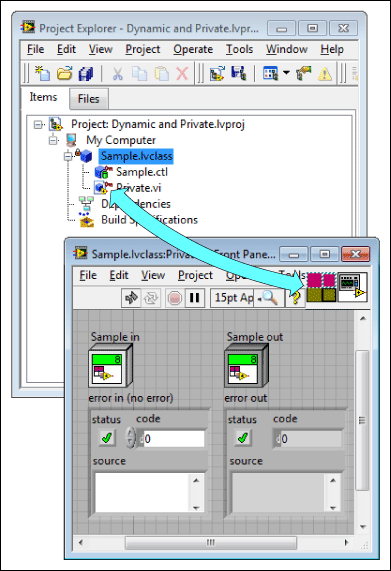

You use a dynamic dispatch VI so that child classes can override that VI and provide different behavior with a VI of the same name. If the dynamic dispatch VI is private, it is hidden from child classes. As a result, errors might occur when a child class attempts to match the connector pane of the dynamic dispatch VI.
To correct this error, make the dynamic dispatch VI static by removing the dynamic input terminal or change the access scope of the VI to Protected or Public.